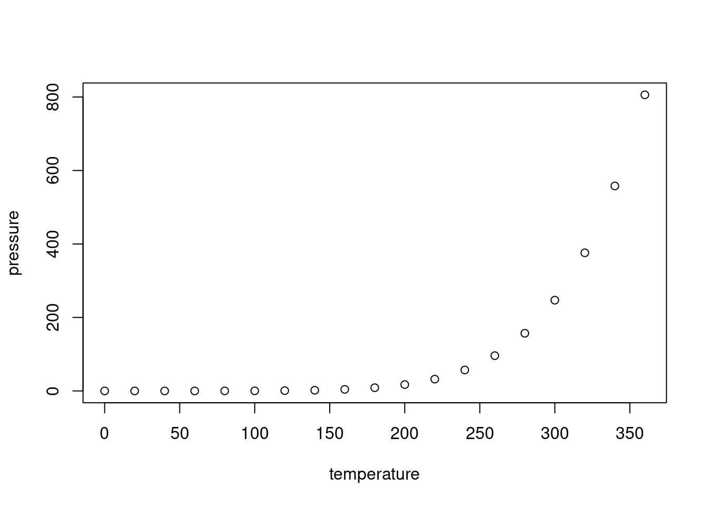

Hoofdstuk 10 Vraag 3
10.0.1 Welke skills moet/wil ik nog leren?
Om goed voorbereid aan de master te beginnen, wil ik me verder ontwikkelen in RNA‑seq analyse, machine learning, Python voor bioinformatica, HPC/cloud‑computing en geavanceerde datavisualisatie. Daarnaast wil ik mijn wetenschappelijke schrijfvaardigheid en presentatievaardigheden verder versterken om complexe data helder te kunnen communiceren.
10.1 R Markdown
This is an R Markdown document. Markdown is a simple formatting syntax for authoring HTML, PDF, and MS Word documents. For more details on using R Markdown see http://rmarkdown.rstudio.com.
When you click the Knit button a document will be generated that includes both content as well as the output of any embedded R code chunks within the document. You can embed an R code chunk like this:
## speed dist
## Min. : 4.0 Min. : 2.00
## 1st Qu.:12.0 1st Qu.: 26.00
## Median :15.0 Median : 36.00
## Mean :15.4 Mean : 42.98
## 3rd Qu.:19.0 3rd Qu.: 56.00
## Max. :25.0 Max. :120.0010.2 Including Plots
You can also embed plots, for example:

Note that the echo = FALSE parameter was added to the code chunk to prevent printing of the R code that generated the plot.

(#fig:opdracht 3a en b)Mapstructuur volgens Guerilla Analytics: links) De ‘directory tree’ volgens de Guerilla Analytics regels. rechts) de inhoud van het readme bestand
In deze analyse wordt we data van C. elegans geanalyseerd die zijn blootgesteld aan verschillende concentraties van diverse chemicaliën. Doel: de analyse reproduceerbaar uitwerken met RMarkdown, inclusief visualisatie, normalisatie en een stappenplan richting dose–response analyse.
# data inlezen
data <- read_excel("/home/bo.steinschuld/dsfb2_workflows_portfolio/data_raw/CE.LIQ.FLOW.062_Tidydata.xlsx")
glimpse(data)## Rows: 360
## Columns: 34
## $ plateRow <lgl> NA, NA, NA, NA, NA, NA, NA, NA, NA, NA, NA, NA, NA…
## $ plateColumn <lgl> NA, NA, NA, NA, NA, NA, NA, NA, NA, NA, NA, NA, NA…
## $ vialNr <dbl> 1, 1, 1, 1, 1, 2, 2, 2, 2, 2, 3, 3, 3, 3, 3, 1, 1,…
## $ dropCode <chr> "a", "b", "c", "d", "e", "a", "b", "c", "d", "e", …
## $ expType <chr> "experiment", "experiment", "experiment", "experim…
## $ expReplicate <dbl> 3, 3, 3, 3, 3, 3, 3, 3, 3, 3, 3, 3, 3, 3, 3, 3, 3,…
## $ expName <chr> "CE.LIQ.FLOW.062", "CE.LIQ.FLOW.062", "CE.LIQ.FLOW…
## $ expDate <dttm> 2020-11-30, 2020-11-30, 2020-11-30, 2020-11-30, 2…
## $ expResearcher <chr> "Sergio Reijnders - Ellis Herder", "Sergio Reijnde…
## $ expTime <dbl> 68, 68, 68, 68, 68, 68, 68, 68, 68, 68, 68, 68, 68…
## $ expUnit <chr> "hour", "hour", "hour", "hour", "hour", "hour", "h…
## $ expVolumeCounted <dbl> 50, 50, 50, 50, 50, 50, 50, 50, 50, 50, 50, 50, 50…
## $ RawData <dbl> 44, 37, 45, 47, 41, 35, 41, 36, 40, 38, 44, 48, 43…
## $ compCASRN <chr> "24157-81-1", "24157-81-1", "24157-81-1", "24157-8…
## $ compName <chr> "2,6-diisopropylnaphthalene", "2,6-diisopropylnaph…
## $ compConcentration <chr> "4.99", "4.99", "4.99", "4.99", "4.99", "4.99", "4…
## $ compUnit <chr> "nM", "nM", "nM", "nM", "nM", "nM", "nM", "nM", "n…
## $ compDelivery <chr> "Liquid", "Liquid", "Liquid", "Liquid", "Liquid", …
## $ compVehicle <chr> "controlVehicleA", "controlVehicleA", "controlVehi…
## $ elegansStrain <chr> "N2", "N2", "N2", "N2", "N2", "N2", "N2", "N2", "N…
## $ elegansInput <dbl> 25, 25, 25, 25, 25, 25, 25, 25, 25, 25, 25, 25, 25…
## $ bacterialStrain <chr> "OP50", "OP50", "OP50", "OP50", "OP50", "OP50", "O…
## $ bacterialTreatment <chr> "heated", "heated", "heated", "heated", "heated", …
## $ bacterialOD600 <dbl> 0.743, 0.743, 0.743, 0.743, 0.743, 0.743, 0.743, 0…
## $ bacterialConcX <dbl> 8, 8, 8, 8, 8, 8, 8, 8, 8, 8, 8, 8, 8, 8, 8, 8, 8,…
## $ bacterialVolume <dbl> 300, 300, 300, 300, 300, 300, 300, 300, 300, 300, …
## $ bacterialVolUnit <chr> "ul", "ul", "ul", "ul", "ul", "ul", "ul", "ul", "u…
## $ incubationVial <chr> "1,5 glass vial", "1,5 glass vial", "1,5 glass via…
## $ incubationVolume <dbl> 1000, 1000, 1000, 1000, 1000, 1000, 1000, 1000, 10…
## $ incubationUnit <chr> "ul", "ul", "ul", "ul", "ul", "ul", "ul", "ul", "u…
## $ incubationMethod <chr> "rockroll", "rockroll", "rockroll", "rockroll", "r…
## $ incubationRPM <dbl> 35, 35, 35, 35, 35, 35, 35, 35, 35, 35, 35, 35, 35…
## $ bubble <lgl> NA, NA, NA, NA, NA, NA, NA, NA, NA, NA, NA, NA, NA…
## $ incubateTemperature <dbl> 20, 20, 20, 20, 20, 20, 20, 20, 20, 20, 20, 20, 20…## RawData compName compConcentration expType
## Min. : 0.0 Length:360 Length:360 Length:360
## 1st Qu.: 51.5 Class :character Class :character Class :character
## Median : 72.0 Mode :character Mode :character Mode :character
## Mean : 68.1
## 3rd Qu.: 88.0
## Max. :124.0
## NA's :5## tibble [360 × 4] (S3: tbl_df/tbl/data.frame)
## $ RawData : num [1:360] 44 37 45 47 41 35 41 36 40 38 ...
## $ compName : chr [1:360] "2,6-diisopropylnaphthalene" "2,6-diisopropylnaphthalene" "2,6-diisopropylnaphthalene" "2,6-diisopropylnaphthalene" ...
## $ compConcentration: chr [1:360] "4.99" "4.99" "4.99" "4.99" ...
## $ expType : chr [1:360] "experiment" "experiment" "experiment" "experiment" ...# ik zie bij compName en compConcentration characters staan terwijl dit factors en nummers moeten zijn.
# Daarom aanpassen:
data <- data %>%
mutate(
RawData = as.numeric(RawData),
compName = as.factor(compName),
expType = as.factor(expType),
compConcentration = as.numeric(compConcentration)
)## Warning: There was 1 warning in `mutate()`.
## ℹ In argument: `compConcentration = as.numeric(compConcentration)`.
## Caused by warning:
## ! NAs introduced by coercion## tibble [360 × 4] (S3: tbl_df/tbl/data.frame)
## $ RawData : num [1:360] 44 37 45 47 41 35 41 36 40 38 ...
## $ compName : Factor w/ 5 levels "2,6-diisopropylnaphthalene",..: 1 1 1 1 1 1 1 1 1 1 ...
## $ compConcentration: num [1:360] 4.99 4.99 4.99 4.99 4.99 4.99 4.99 4.99 4.99 4.99 ...
## $ expType : Factor w/ 4 levels "controlNegative",..: 4 4 4 4 4 4 4 4 4 4 ...# Scatterplot met:
# - compConcentration op x-as
# - RawData op y-as
# - kleur = compName
# - shape = expType
# - log10 x-as
# - jitter om overlap te voorkomen
# - leesbare labels
ggplot(data,
aes(x = compConcentration,
y = RawData,
colour = compName,
shape = expType)) +
geom_point(position = position_jitter(width = 0.05, height = 0)) +
scale_x_log10(
labels = scales::label_number(),
breaks = scales::log_breaks()
) +
theme_bw() +
labs(
x = "Concentratie (log10-schaal)",
y = "Aantal nakomelingen",
colour = "Compound",
shape = "ExpType"
) +
theme(
axis.text.x = element_text(angle = 45, hjust = 1)
)## Warning in scale_x_log10(labels = scales::label_number(), breaks =
## scales::log_breaks()): log-10 transformation introduced infinite values.## Warning: Removed 6 rows containing missing values or values outside the scale range
## (`geom_point()`).
# 1. Controleer datatypes
data <- data %>%
mutate(
RawData = as.numeric(RawData),
compConcentration = as.numeric(compConcentration),
compName = as.factor(compName),
expType = as.factor(expType)
)
# 2. Bereken gemiddelde negatieve controle
neg_mean <- data %>%
filter(expType == "controlNegative") %>%
summarise(mean_neg = mean(RawData, na.rm = TRUE)) %>%
pull(mean_neg)
neg_mean # handig om te printen## [1] 85.9# 3. Normaliseer alle waarden
data_norm <- data %>%
mutate(RawData_norm = RawData / neg_mean)
# 4. Scatterplot met genormaliseerde waarden
ggplot(data_norm,
aes(x = compConcentration,
y = RawData_norm,
colour = compName,
shape = expType)) +
geom_point(position = position_jitter(width = 0.05, height = 0)) +
scale_x_log10(
labels = scales::label_number(),
breaks = scales::log_breaks()
) +
theme_bw() +
labs(
x = "Concentratie (log10-schaal)",
y = "Genormaliseerde nakomelingen (t.o.v. negatieve controle = 1)",
colour = "Compound",
shape = "ExpType"
) +
theme(
axis.text.x = element_text(angle = 45, hjust = 1)
)## Warning in scale_x_log10(labels = scales::label_number(), breaks =
## scales::log_breaks()): log-10 transformation introduced infinite values.## Warning: Removed 6 rows containing missing values or values outside the scale range
## (`geom_point()`).
In dit experiment zijn C. elegans blootgesteld aan verschillende concentraties van diverse chemicaliën om te onderzoeken hoe deze stoffen de voortplanting beïnvloeden. Om de resultaten betrouwbaar te kunnen interpreteren, is het essentieel om te begrijpen welke controles in het experiment zijn opgenomen en waarom deze nodig zijn. De dataset bevat drie typen controles: een negatieve controle, een positieve controle en een vehicle controle.
De negatieve controle bestaat uit wormen die niet zijn blootgesteld aan een werkzame stof. Dit is de conditie waarin we het normale, gezonde aantal nakomelingen verwachten. Deze controle vormt het referentiepunt van het experiment: alle andere metingen worden hiertegen afgezet. De negatieve controle laat zien hoe de wormen zich gedragen zonder enige vorm van toxiciteit of verstoring, en is daarom cruciaal om te bepalen of een compound daadwerkelijk een effect heeft.
De positieve controle bevat een stof waarvan bekend is dat deze een sterk toxisch effect heeft op C. elegans. Het doel van deze controle is om te bevestigen dat de assay goed functioneert: als de positieve controle geen duidelijk effect laat zien, dan is er iets mis met het experiment (bijvoorbeeld met de wormen, de incubatiecondities of de meetmethode). De positieve controle fungeert dus als een kwaliteitscheck van het hele systeem.
Daarnaast is er de vehicle controle, waarin de wormen worden blootgesteld aan het oplosmiddel (bijvoorbeeld DMSO) zonder werkzame stof. Veel chemicaliën moeten worden opgelost in een solvent voordat ze aan de wormen kunnen worden toegediend. Het is daarom belangrijk om te controleren of dit oplosmiddel zelf geen effect heeft op de voortplanting. Als de vehicle controle hetzelfde gedrag laat zien als de negatieve controle, weten we dat eventuele effecten in de experimentele condities niet worden veroorzaakt door het oplosmiddel.
Om de resultaten tussen verschillende condities en concentraties goed te kunnen vergelijken, is de data vervolgens genormaliseerd ten opzichte van de negatieve controle. Hierbij wordt het gemiddelde aantal nakomelingen in de negatieve controle gelijkgesteld aan 1. Alle andere waarden worden uitgedrukt als een fractie van deze baseline. Deze normalisatie heeft meerdere voordelen: het corrigeert voor variatie tussen experimentdagen, maakt de resultaten intuïtiever te interpreteren en zorgt ervoor dat verschillen tussen compounds en concentraties duidelijker zichtbaar worden. Een waarde kleiner dan 1 duidt op een toxisch effect (minder nakomelingen dan normaal), terwijl een waarde groter dan 1 wijst op stimulatie of verhoogde voortplanting. Door deze aanpak ontstaat een helder en reproduceerbaar beeld van de effecten van de verschillende chemicaliën op de wormen.
stappenplan voor vervolgonderzoek
# let op: deze code wordt niet uitgevoerd, alleen laten zien!
# Deze code voert alle stappen uit die nodig zijn om een
# dose–response curve te fitten en de IC50 te bepalen.
# 1. Laad benodigde packages ---------------------------------
# drc = dose-response modelling
# tidyverse = data manipulatie en plotting
install.packages("drc", dependencies = TRUE)
library(drc)
library(tidyverse)
# 2. Selecteer één compound voor de analyse -------------------
# Kies hier de naam van het compound dat je wilt analyseren.
compound_of_interest <- "2,6-diisopropylnaphthalene"
# Filter alleen:
# - dit compound
# - experimentele metingen (dus geen controles)
# - genormaliseerde respons (RawData_norm)
dose_data <- data_norm %>%
filter(compName == compound_of_interest,
expType == "experiment") %>%
select(compConcentration, RawData_norm) %>%
drop_na()
# Controleer of de data er goed uitziet
head(dose_data)
# 3. Visualiseer ruwe dose–response relatie -------------------
# Dit is een snelle check om te zien of er een dalende trend is.
ggplot(dose_data,
aes(x = compConcentration, y = RawData_norm)) +
geom_point(size = 3) +
scale_x_log10() +
theme_bw() +
labs(
title = paste("Ruwe dose–response voor", compound_of_interest),
x = "Concentratie (log10-schaal)",
y = "Genormaliseerde respons"
)
# 4. Fit een 4-parameter log-logistisch model (LL.4) ----------
# LL.4 heeft vier parameters:
# - Lower: minimale respons
# - Upper: maximale respons
# - Slope: steilheid van de curve
# - IC50: concentratie waarbij 50% effect optreedt
m_LL4 <- drm(
RawData_norm ~ compConcentration,
data = dose_data,
fct = LL.4(names = c("Slope", "Lower", "Upper", "IC50"))
)
# Bekijk modelresultaten
summary(m_LL4)
# 5. Plot de dose–response curve ------------------------------
# Dit geeft een nette S-curve met de ruwe punten erbij.
plot(
m_LL4,
log = "x",
xlab = "Concentratie (log10-schaal)",
ylab = "Genormaliseerde respons",
main = paste("Dose–response curve voor", compound_of_interest)
)
# 6. Bepaal de IC50 -------------------------------------------
# ED() = Effective Dose
# ED(model, 50) = concentratie waarbij 50% effect optreedt
IC50_result <- ED(m_LL4, 50, interval = "delta")
IC50_result
# Output bevat:
# - Estimate = IC50
# - Lower / Upper = betrouwbaarheidsinterval
# 7. (Optioneel) Vergelijk modellen ---------------------------
# Soms is een 3-parameter model (LL.3) beter.
m_LL3 <- drm(
RawData_norm ~ compConcentration,
data = dose_data,
fct = LL.3()
)
# Vergelijk LL.3 en LL.4
anova(m_LL3, m_LL4)
# Als LL.4 significant beter is → LL.4 gebruiken.